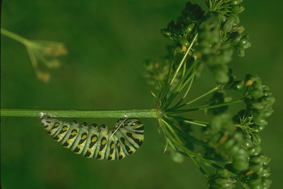
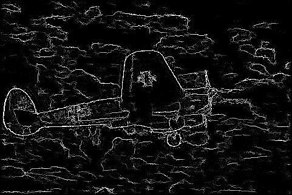
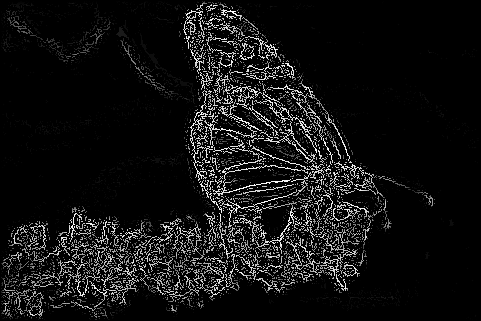
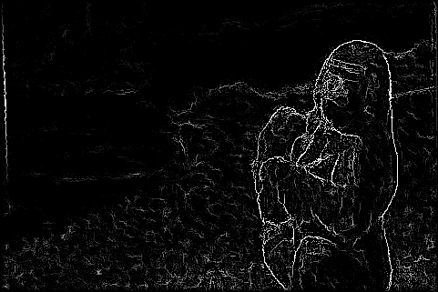
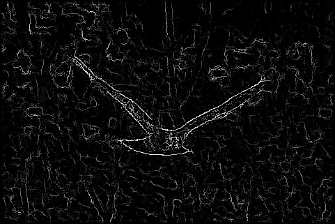
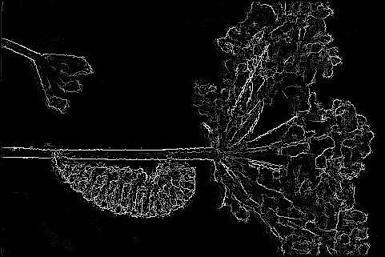
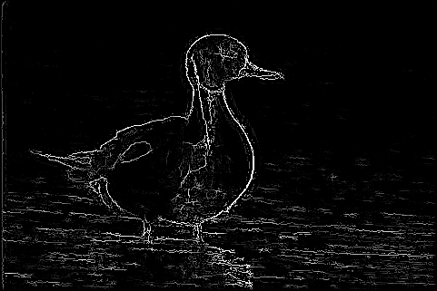
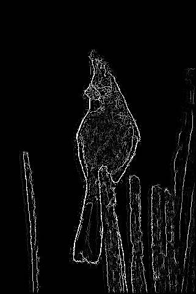
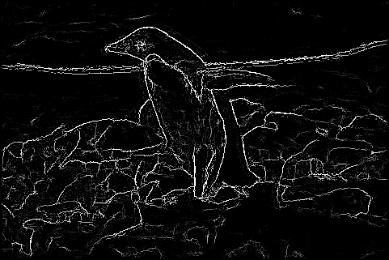
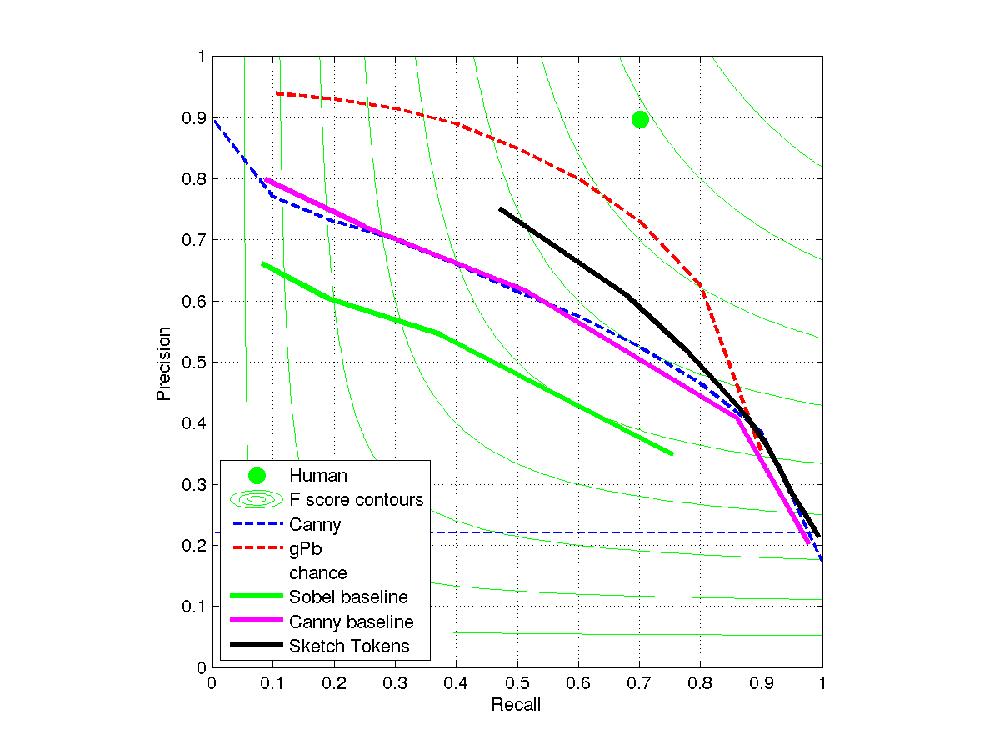

CS 143 / Project 5 / Boundary Detection with Sketch Tokens
Boundary detection is a commonly studied problem in computer vision and several algorithms have been developed in order to address this problem. In project 5, we implemented the recently published Sketch Tokens boundary detector pipeline. This pipeline relies only on local information and uses simple gradient and color features. We used the Berkeley segmentation dataset which contains 500 images (200 training, 100 validation, 200 test.) Each of the images corresponds to at least 4 human segmentations.
Implementation
Training images were converted into 14 channels: 3 LUV color channels, 3 overally gradient magnitude channels and 8 oriented gradient magnitude channels. In order to compute the oriented gradient magnitude channels, I created 4 sobel-like filters at different orientations (0, pi/4, pi/2, 3pi/4.) I also added self similarity features which are defined by splitting an image patch of channel features into an mxm grid and summing all of the values in the patch. Self similarity is measured by finding the difference between all unique pairs of patch sums. At training time, positive and negative examples of contours are extracted from the training set using the corresponding human annotation images. Positive examples are 15x15 patches centered on an annotation boundary. Human annotations were converted into DAISY features and patches from the same location as each of the previously extracted positive examples are extracted from these features. The DAISY patches are clustered using k-means and the cluster labels are transferred over to the postive image examples to be used as classification labels. Negative image features are simply labeled with a 1. A random forest classifier is trained using these labels and image features. At testing time, test images are padded using reflected image content and converted into channels. 15x15 patches are extracted around each pixel, self similarity features are computed, and the resulting features are classified using the previously trained random forest. A contour-probability map is computed for each test image. The map is blurred using a gaussian kernel and non-maximum suppression is performed. Resulting contour images and result statistics are shown below.
Results
Input Images


|



|
Contour Images Produced
|     |
|     |
PR Curve
F score of 0.65 using self similarity
F score of 0.63 without self similarity